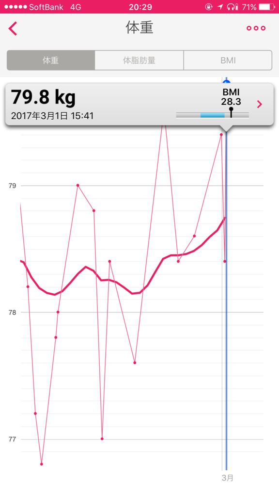
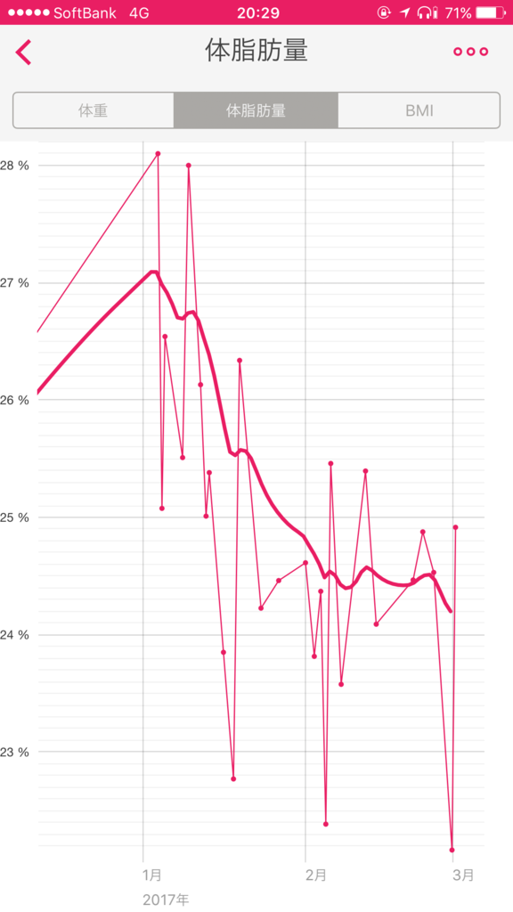
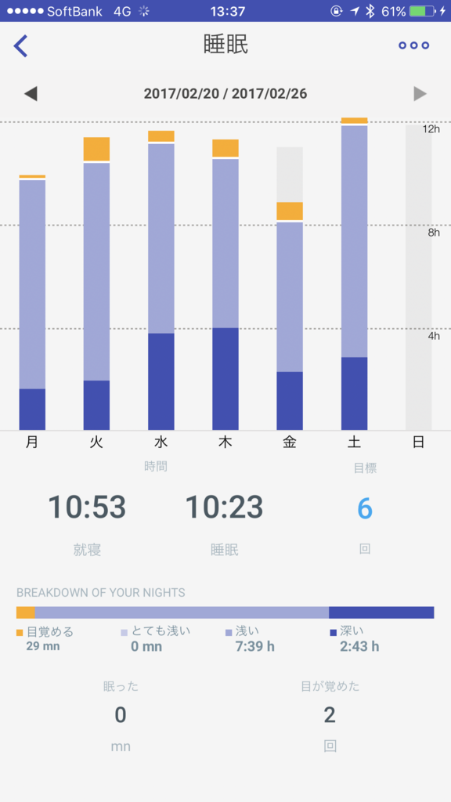

ジムに通い始めて1カ月が経ちました
執筆日時：

これまでは仮会員証で通っていたのですが、今日、本会員証がもらえました(*´▽｀*)
ちなみに、2月は11回通った模様。割と頑張った気がする。30分ちょい泳いで（距離にして1kmぐらい）、30分弱お風呂に入る程度ですが、1日1,000歩もあるかない生活から、週に2・3回6,000歩＋水泳をするようになったのですから、大した進歩だと思います。
あーでも、ちょっと疲れちゃって、ブログ書いたり、本を読んだりする時間が少し減っちゃったのは痛いかな。そのうち慣れてくればいいんですけど。
 
残念ながら体重は微増。80kg の大台が見えてきて((((；ﾟДﾟ))))ｶﾞｸｶﾞｸﾌﾞﾙﾌﾞﾙです。
まぁ、体脂肪率は下がってきてる感じなので、今は筋肉が増えるフェイズなんだと思うことにしています（正月デブから回復しつつあるだけのようにも思う）。
追伸

運動してるおかげか、寝るのがめっちゃ気持ちいい……なんか10時間ぐらい寝てるんですけど、このままダメ人間になってしまわないかちょっと不安ではある。

Withings スマートウォッチ Activité Pop Shark Grey【日本正規代理店品】
- 出版社/メーカー: Withings
- 発売日: 2015/07/30
- メディア: エレクトロニクス
- この商品を含むブログを見る

Withings スマート体重計 Smart Body Analyzer WS-50 ホワイト Wi-Fi/Bluetooth対応【日本正規代理店品】
- 出版社/メーカー: Withings
- 発売日: 2015/04/16
- メディア: エレクトロニクス
- この商品を含むブログ (1件) を見る